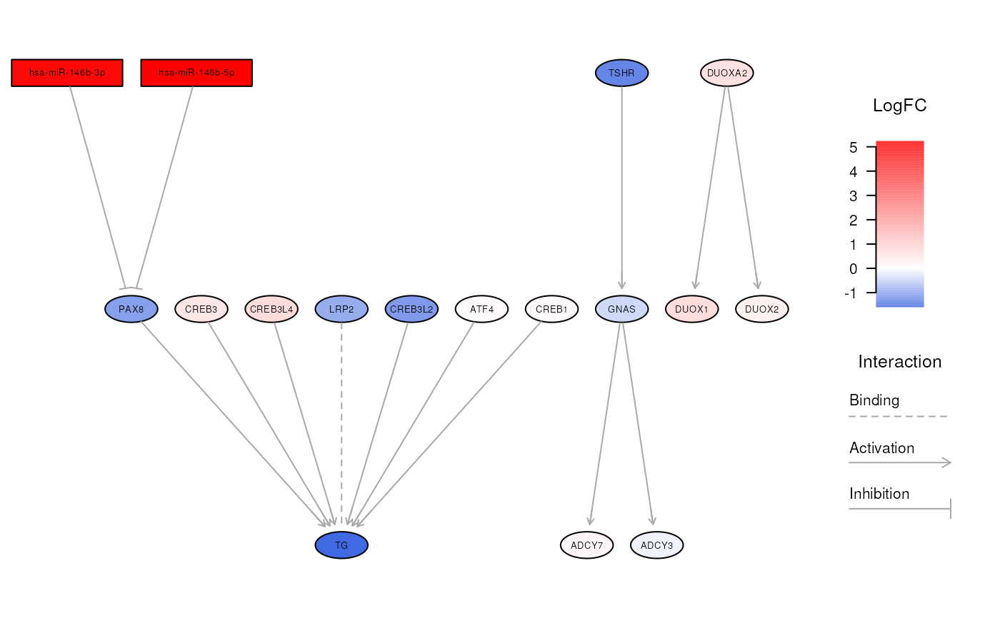

Visualize the relationships between miRNAs and genes in a biological pathway
Source:R/visualization.R
visualizeNetwork.RdThis function can be used to plot augmented pathways created by the
topologicalAnalysis() function. In particular, given a valid object of
class IntegrativePathwayAnalysis,
this function allows to produce a network graph for a specified biological
pathway, alongside with expression fold changes. In this way, augmented
pathways made of both miRNAs and genes can be visually explored to better
investigate the consequences of miRNA/gene dysregulations.
Usage
visualizeNetwork(
object,
pathway,
algorithm = "dot",
fontsize = 14,
lfcScale = c("royalblue", "white", "red"),
nodeBorderCol = "black",
nodeTextCol = "black",
edgeCol = "darkgrey",
edgeWidth = 1,
subgraph = NULL,
highlightNodes = NULL,
highlightCol = "gold",
highlightWidth = 2,
legendColorbar = TRUE,
legendInteraction = TRUE,
title = NULL,
titleCex = 2,
titleFace = 1
)Arguments
- object
An object of class
IntegrativePathwayAnalysiscontaining the results of a miRNA-mRNA pathway analysis- pathway
The name of the biological pathway to show. The available pathways for a given database can be seen through the
listPathways()function- algorithm
The layout algorithm used to arrange nodes in the network. It must be one of
dot(default),circo,fdp,neato,osageortwopi. For more information regarding these algorithms, please check the details section- fontsize
The font size of each node in the graph. Default is 14
- lfcScale
It must be a
charactervector of length 3 containing valid R color names for creating a gradient of log2 fold changes. The first value refers to downregulation, the middle one to stable expression, and the last one to upregulation. Default value isc('royalblue', 'white', 'red'). Available color formats include color names, such as 'blue' and 'red', and hexadecimal colors specified as #RRGGBB- nodeBorderCol
It must be an R color name that specifies the color of node borders. Default is
black. Available color formats include color names, such as 'blue' and 'red', and hexadecimal colors specified as #RRGGBB- nodeTextCol
It must be an R color name that specifies the color of miRNA/gene names. Default is
black. Available color formats include color names, such as 'blue' and 'red', and hexadecimal colors specified as #RRGGBB- edgeCol
It must be an R color name that specifies the color of edges between nodes. Default is
darkgrey. Available color formats include color names, such as 'blue' and 'red', and hexadecimal colors specified as #RRGGBB- edgeWidth
The width of edges. Default is 1
- subgraph
An optional
charactervector containing the nodes that you want to maintain in the final plot. All the other nodes will not be shown. This is useful to display specific features of extremely messy graphs. Default is NULL- highlightNodes
A
charactervector containing the names of nodes that you want to highlight. Default is NULL not to highlight any nodes. See the details section for additional information- highlightCol
It must be an R color name that specifies the color of edges and borders for highlighted nodes. Default is
gold. Available color formats include color names, such as 'blue' and 'red', and hexadecimal colors specified as #RRGGBB- highlightWidth
The width of edges between highlighted nodes. Default is 2
- legendColorbar
Logical, whether to add a legend with a color bar for log2 fold changes. Default is TRUE
- legendInteraction
Logical, whether to add a legend that links edge types to biological interactions. Default is TRUE
- title
The title of the plot. Default is
NULLnot to include a plot title- titleCex
The cex of the plot main title. Default is 2
- titleFace
An integer which specifies which font to use for title. 1 corresponds to plain text, 2 to bold face, 3 to italic, 4 to bold italic, and 5 to symbol font. Default is 1
Details
The network created by this function is highly flexible, allowing to tweak different parameters that can influence the resulting graph, including node highlighting, layout algorithms, colors, and legends.
Nodes included in the plot
For huge messy networks, the user can specify the nodes to include in the
plot through the subgraph parameter, in order to represent only the
features that he wants to display. Alternatively, this parameter can be set
to NULL (default), to plot all nodes of that biological pathway.
Highlight nodes and edges
One interesting feature offered by this function consists in highlighting
specific nodes and edges within a network. This results particularly useful
when we want to put in evidence affected routes in a biological pathway.
To highlight nodes, you must provide the highlightNodes parameter with a
character vector that lists all the desired nodes. As a result, the
borders of highlighted nodes will be colored according to highlightCol
parameter (default is 'gold'), and will have a width specified by
highlightWidth (default is 2). Notably, this function automatically
highlights in the same way the edges connecting the selected nodes.
Layout algorithms
Furthermore, this function allows to use different methods to lay out nodes
in the network by setting the algorithm parameter. In this regard, several
algorithms in Rgraphviz package can be used, namely:
dot(default), which is an algorithm attributed to Sugiyama et al. and described by Gansner et al., that creates a ranked layout that is particularly suited to display hierarchies and complex pathways;circo, which uses a recursive radial algorithm resulting in a circular layout;fdp, which adopts a force-directed approach similar to that of Fruchterman and Reingold;neato, which relies on a spring model where an iterative solver finds low energy configurations;osage, which is a layout engine that recursively draws cluster subgraphs;twopi, which places a node in the center of the network, and then arranges the remaining nodes in a series of concentric circles around the center.
For additional information on these algorithms, refer to Rgraphviz::GraphvizLayouts.
Customization
To customize the look of the resulting plot, this function allows to change different graphical parameters, including:
the color scale for log2 fold changes, that can be set with
lfcScale;the font size of nodes, which can be changed through
fontsize;the border color for nodes, which can be edited with
nodeBorderCol;the text color of nodes, which can be changed through
nodeTextCol;the color used for edges, set by
edgeCol;the width of edges, customizable with
edgeWidth.
Additionally, this function allows to include handy legends that are useful for interpreting the biological consequences of network alterations. In particular:
a color bar legend displaying the log2 fold changes corresponding to each fill color can be included with
legendColorbar = TRUE(default); anda legend that links the appearance of edges and arrow heads to the type of biological interaction can be shown through
legendInteraction = TRUE(default).
Lastly, title, titleCex and titleFace parameters can be tweaked to
include a network title with the desired look.
Author
Jacopo Ronchi, jacopo.ronchi@unimib.it
Examples
# load example IntegrativePathwayAnalysis object
obj <- loadExamples("IntegrativePathwayAnalysis")
# \donttest{
# explore a specific biological network
visualizeNetwork(obj, "Thyroid hormone synthesis")

# }